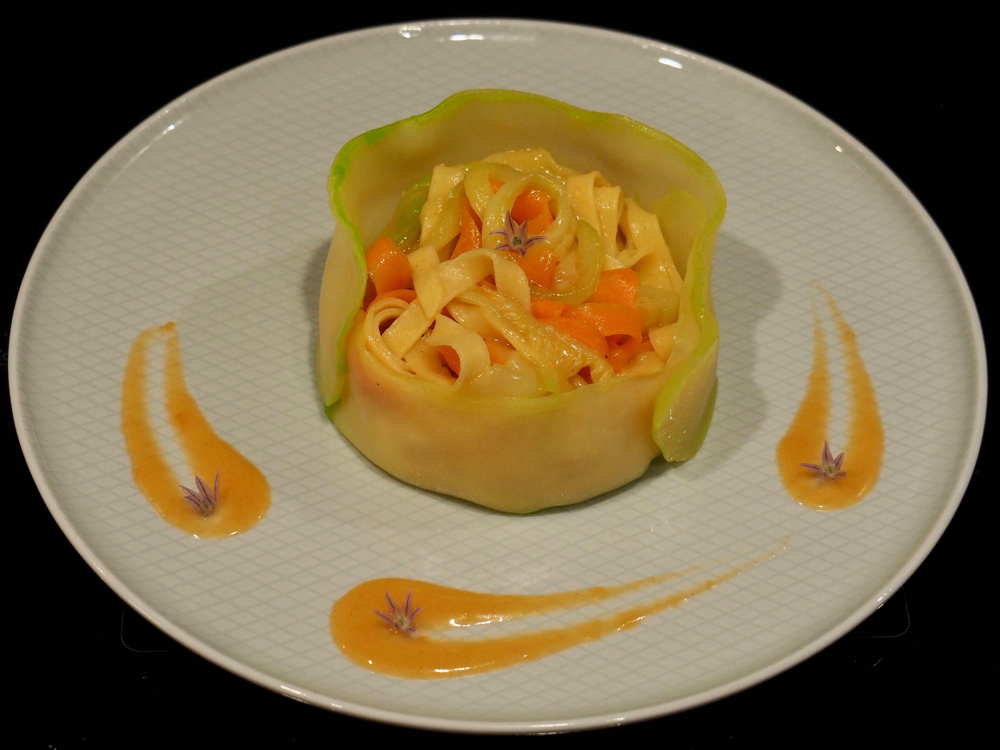
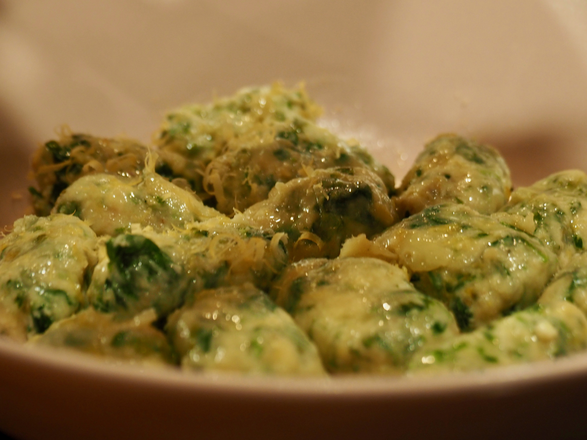
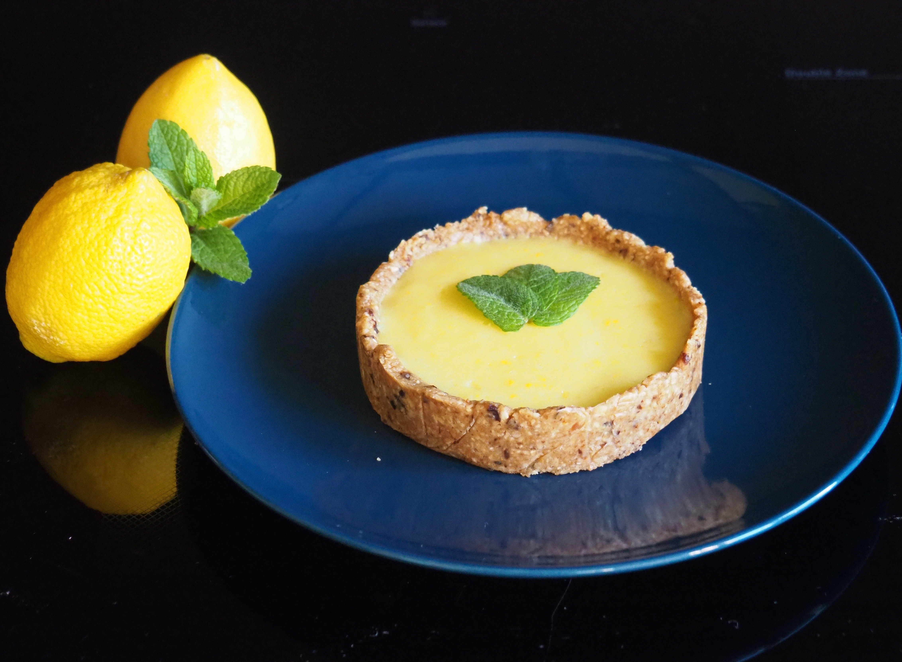

Printemps
Salé
Soupe de petits pois à la menthe
Pour 2 personnes | Temps préparation : 10 min | Temps réfrigération : 30 min
Meilleur rapport effort/plaisir qui soit !
Ingrédients
- 1 grosse boite de petits pois en conserve (si frais ou surgelés prévoir cuisson)
- 2 cs de crème fraîche
- Une quinzaine de feuilles de menthe
Consignes
- Mixer les petits pois et la menthe ensemble
- Ajouter la crème et ajuster la consistence avec de l’eau
- Mettre au frais une demi-heure avant de servir
Tajine d’agneau aux pruneaux et amandes
Pour 4 personnes | Temps préparation : 20 min | Temps cuisson : 1h30
Pour un repas de Pâques tolérant et ouvert
Ingrédients
- 600g d’agneau (à ajuster suivant les mangeurs, morceau à choisir)
- 15 gros pruneaux
- 3 tomates (fraiches ou conserve au pire)
- 1 oignon
- 2 gousses d’ail
- 2 carottes
- 2 poignées d’amandes
Consignes
- Détailler l’agneau en morceaux de taille moyenen et le faire revenir dans de la matière grasse
- Mouiller avec un peu d’eau et ajouter les tomates, l’oignon, l’ail et les carottes, le tout coupé en cubes
- Laisser mijoter tranquillement à feu doux pendant une bonne heure
- Pendant ce temps faire torréfier les amandes au four à 160°C jusqu’à ce qu’elles commencent à colorer
- Un peu avant la fin de la cuisson de l’agneau, rajouter les amandes et les pruneaux dénoyautés et coupés en morceaux
- Servir avec un accompagnement au choix: semoule…
Tagliatelles mêlées sauce crevettes
Environ 3 personnes | Temps préparation : 30 min | Temps cuisson : 20 min
La style et le goût ! Avec uniquement les restes de crevettes.
Ingrédients
- 300g de tagliatelles fraiches
- 1 grosse courgette (ou 2 petites)
- 2 carottes
- Têtes, pattes et carapaces de crevettes (depuis 400g de crevettes entières)
- 3 cs de farine
- 20g de beurre
- Un peu de fécule
Consignes
- Mettre un peu d’huile d’olive dans le fond de la casserole, faire revenir les restes de crevettes à feu vif puis mouiller à hauteur. Faire mijoter tranquillement une bonne vingtaine de minutes
- Pendant ce temps, découper des tagliatelles de courgettes et de carottes. Le plus simple est d’en découper de fines tranches (dans le sens de la longueur) à l’économe puis de les recouper, toujours dans le sens de la longueur. Garder quelques tranches de courgettes entières pour le dressage (environ 2 par personnes, voir photo).
- Filter le bouillon de crevettes et le réserver.
- Faire fondre le beuure dans une casserole et rajouter la farine pour faire un roux. Lui ajouter le bouillon de crevettes et bien mélanger pour homogénéiser
- Chauffer assez fort pour faire réduire progressivement jusqu’à ce que la sauce commence à être un peu nappante. Rajouter un peu de fécule si besoin.
- Faire revenir les tagliatelles de carottes dans une poêle avec de l’huile d’olive. Une fois celles-ci quasiment cuites, rajouter les tagliatelles de courgettes quelques minutes (sauf les grandes)
- Faire blanchir les grandes bandes de courgettes 1 minute dans l’eau bouillante puis les mettre à égoutter sur un tissu absorbant
- Faire cuire les pâtes fraiches, les égoutter puis leur ajouter la sauce. Mélanger délicatement avec les tagliatelles de légumes pour bien mêler le tout
- Pour le dressage chemiser l’intérieur d’un cercle à tartelette avec une ou deux bandes larges de courgettes. Servir les pâtes à l’intérieur puis enlever le cercle

Gnudi cresson et ricotta
2 personnes | Temps préparation : 15 min | Temps cuisson : 15 min | Temps repos : 30 min
Vous connaissiez les gnocchi, vous aimerez les gnudi !
Ingrédients
- 1 botte de cresson
- 250g de ricotta
- 1 oeuf
- 2 cs de panure
- 2 cs de farine
- Le zeste d’un demi citron
- 1 gousse d’ail
- 25g de beurre
- Un peu de fromage à râper: parmesan idéalement, vieille mimolette…
Consignes
- Laver et trier le cresson, en enlevant le plus gros de tiges
- Faire tomber les feuilles de cresson en les faisant chauffer dans une casserole
- Les laisser s’égoutter puis les hacher finement
- Le mélanger avec la ricotta puis rajouter l’œuf, la panure et enfin la farine
- Bien mélanger, assaisonner et laisser reposer 30 min au réfrigérateur
- Dans une assiette, verser un peu de farine puis former des petites sphères avec la pâte (de la forme de gnocchi) et les passer dans la farine pour les enrober (si la préparation est trop collante rajouter un peu de farine dans la préparation mais elle doit quand même rester un peu collante)
- Faire chauffer une grande quantité d’eau et une fois à ébullition, plonger les gnudi délicatement dedans. Lorsqu’il remonte à la surface c’est qu’ils sont cuits.
- Pendant la cuisson, faire chauffer dans une sauteuse le beurre et y faire revenir l’ail et le zeste de citron
- Lorsque les gnudi sont cuits, les sortir de l’eau à l’aide d’une écumoire et les mettre directement dans le beurre
- Les faire revenir quelques minutes dans le beurre puis servir
- Agrémenter de parmesan/mimolette vieillie

Sucré
Tartelettes citron-menthe sans cuisson
4 tartelettes (10 cm) | Temps préparation : 40 min | Temps cuisson : 0 min | Temps repos : ~ 2h
Recette intégralement sans cuisson
Ingrédients
- 85 g de flocons d’avoine
- 45 g de noisettes (ou d’amandes)
- 65 g d’huile de coco
- 85 g de dattes ou de pruneaux
- 3 citrons
- 3 oeufs
- 2 gouttes d’huile essentielle de menthe poivrée
- Quulques feuilles de menthe
- 4 cuillères à soupe de sucre (suivant goûts)
- 1 g de gélatine
- 20 g de beurre
Consignes
- Mixer les flocons d’avoine et les noisettes jusqu’à obtenir une poudre
- Rajouter les dattes et l’huile de coco (amollie ou fondue) puis mixer à nouveau jusq’à obtenir une consistance pateuse
- Foncer la pâte dans des cerles à tartelettes préalablement chemisés de filme alimentaire. Bien marquer les pourtours. Laisser prendre au frais au moins une heure
- Faire chauffer le jus et le zeste des citrons avec le sucre, les oeufs battus et les deux gouttes d’huile essentielle. Bien remuer jusq’à épaisissement
- Sortir du feu et ajouter le beurre et la gélatine (réhydratée) avant d’homogénéiser
- Couler l’appareil dans les fonds de tartes et remettre à prendre au frais
- Décorer de quelques feuilles de menthe
